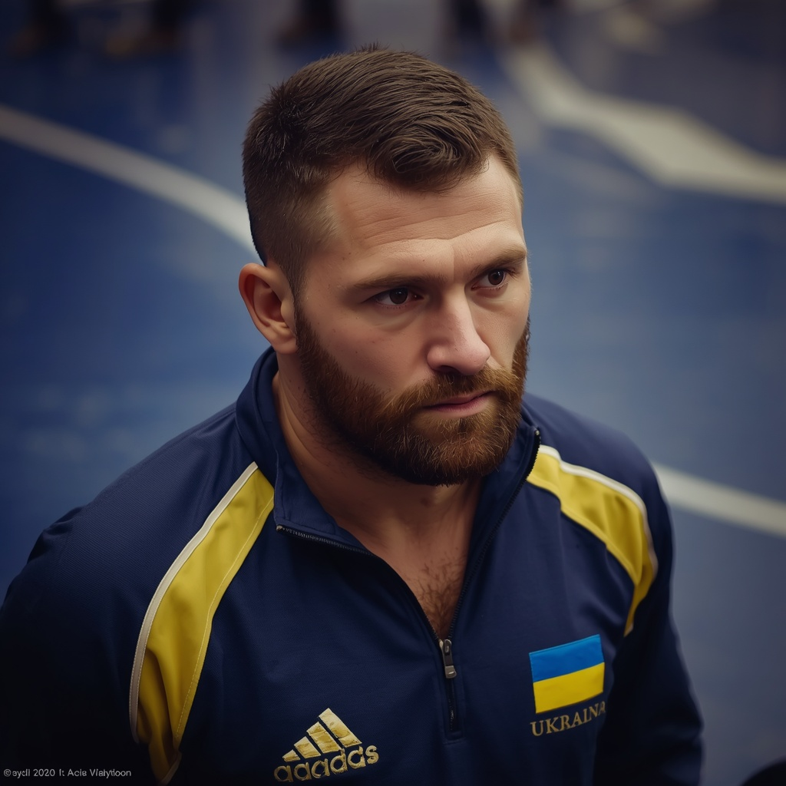
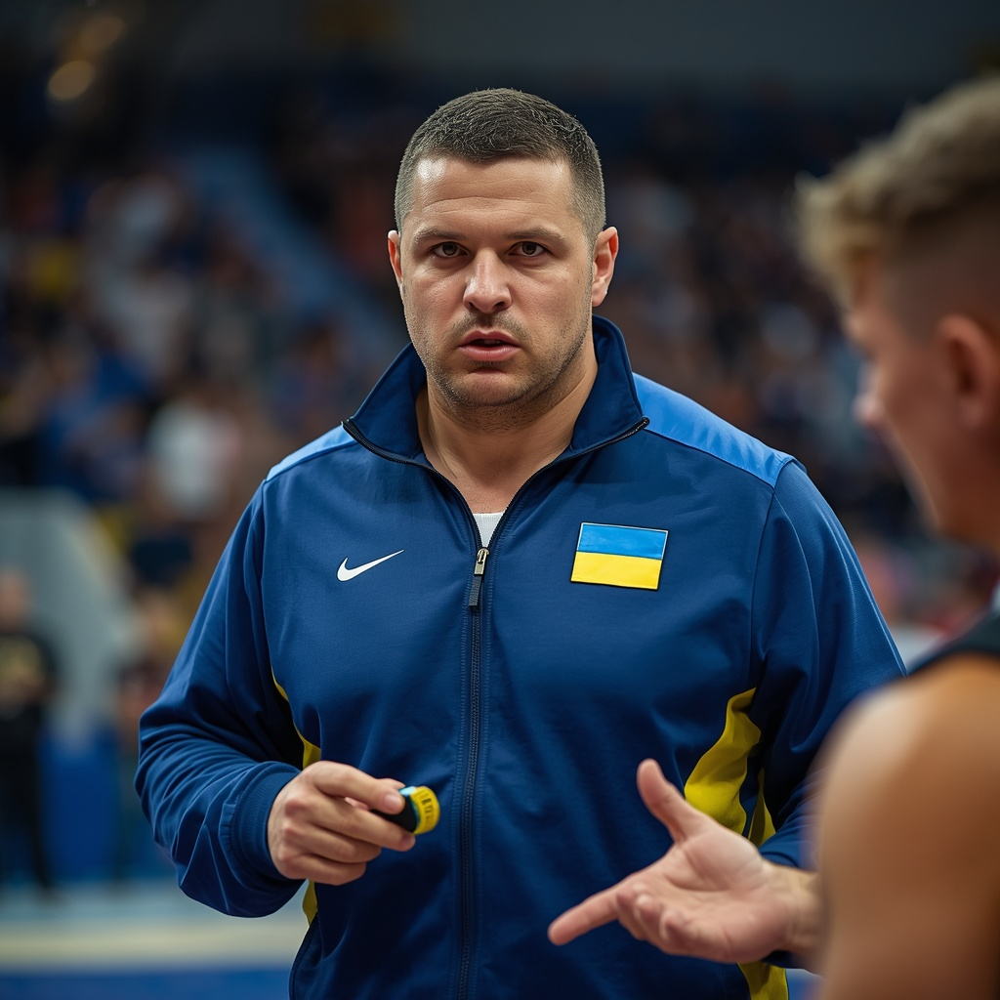
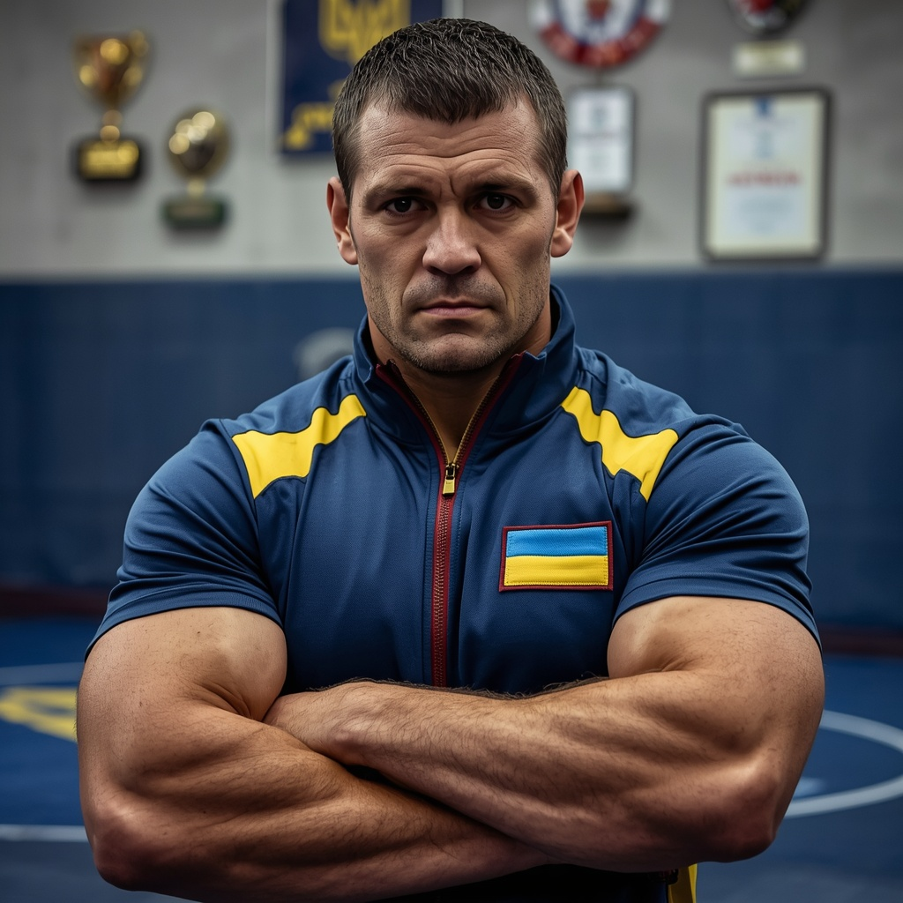
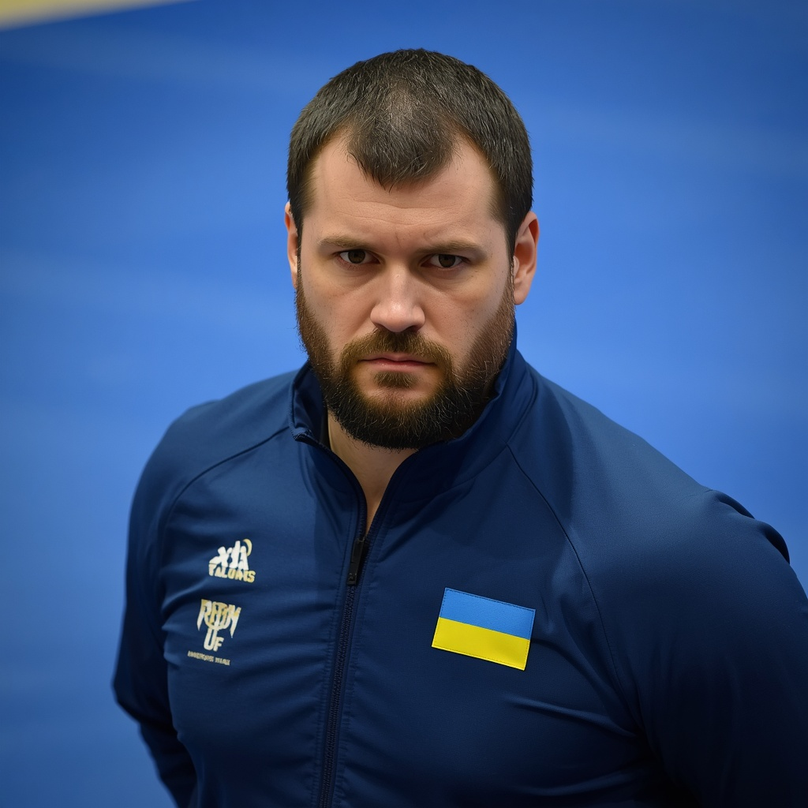
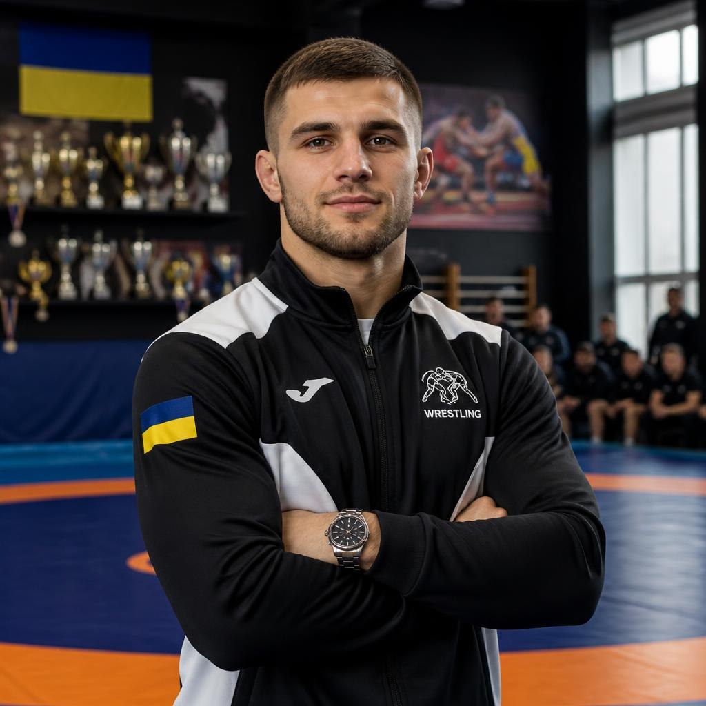
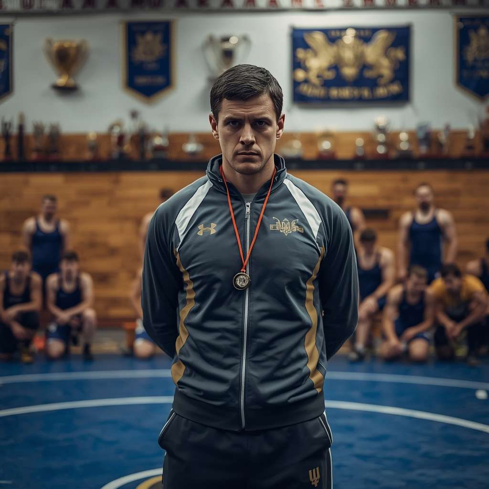

Боротьба — один із найдавніших видів єдиноборств, що входить до програми Олімпійських ігор. Сучасні правила та поділ на стилі (вільна та греко-римська) сформувалися у Франції та Англії в XIX столітті. Змагання проходять на спеціальному круглому килимі діаметром 9 метрів. Найпрестижніші турніри: Олімпіада та Чемпіонат світу UWW. Найкращі борці в історії — Карелін, Сайтиєв, Лопес. Матч обслуговує керівник килима, арбітр та боковий суддя, діє система відеоповторів (челендж). Боротьба розвиває силу, гнучкість, баланс і витривалість.


Правила Сутичка триває 6 хвилин (2 періоди по 3 хвилини з перервою в 30 секунд). На килимі змагаються 2 спортсмени, заміни заборонені. Мета — притиснути суперника лопатками до килима (туше) або перемогти за очками. Бити, кусатися чи проводити больові прийоми заборонено. За кожен успішний кидок, переведення в партер чи виштовхування за килим нараховують від 1 до 5 очок. Порушення (пасивність, грубість, втеча з килима) — попередження та бали супернику. За три попередження борця дискваліфікують. Пасивного гравця арбітр ставить у партер (позиція на колінах).

Артур Мнацаканян — Боротьба. Досвід: 16 років. Спеціалізація: підготовка до про-турнірів, захвати за руку, психологія бійця. Досягнення: вивів дитячу команду в топ-3 країни, виховав чемпіона світу серед кадетів. Про себе: «Готую лідерів з характером, які вміють перевертати хід сутички на останніх секундах».

Олег Богач — Досвід: 7 років. Спеціалізація: тактика захватів, захист від переведень, витривалість. Досягнення: сертифікований тренер UWW, екс-чемпіон України. Про себе: «Поставлю залізобетонний захист, навчу ламати тактику суперника і домінувати на килимі».

Роман Хаджиєв — Боротьба. Досвід: 11 років. Спеціалізація: вільна боротьба, проходи в ноги, контратаки. Досягнення: заслужений тренер, підготував 4 майстрів спорту для збірної. Про себе: «Навчу блискавично проходити в ноги та перемагати за рахунок вибухової швидкості».

Тарас Беленюк — Боротьба. Досвід: 13 років. Спеціалізація: греко-римська боротьба, кидки через спину, робота в партері. Досягнення: майстер спорту міжнародного класу, виховав дворазового призера чемпіонату Європи. Про себе: «Вчу залізом контролювати суперника в захваті та проводити амплітудні кидки».

Ілля Савченко — Боротьба. Досвід: 7 років. Спеціалізація: базова координація, гнучкість, робота з новачками. Досягнення: призер студентської ліги, засновник дитячої секції борців. Про себе: «Навчу правильно падати, розвину гнучкість з нуля та поставлю коронний перший кидок».

Дмитро Павицький — Боротьба. Досвід: 9 років. Спеціалізація: функціональний тренінг, сила, переведення в партер. Досягнення: диплом академії спорту, розробив систему фізичної підготовки для важковаговиків. Про себе: «Прокачаю твою дику фізичну силу та витривалість, щоб ти міг впевнено зминати будь-якого суперника».